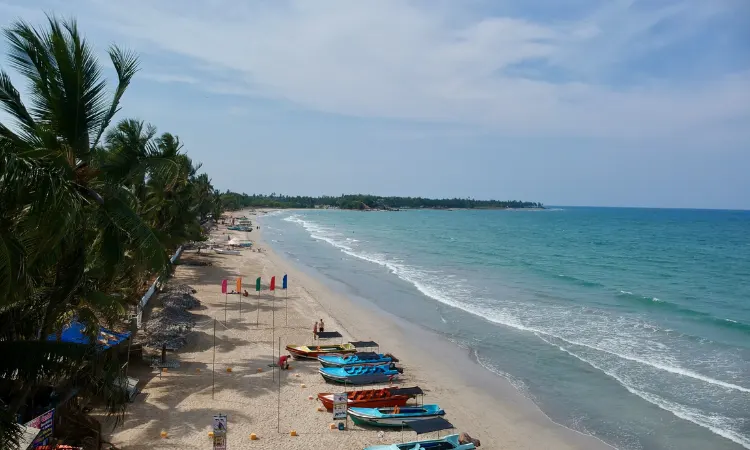

Discover the dual gems of Trincomalee's coastline, where crystal clear waters and ivory sands create the ultimate tropical escape.
Trincomalee is home to two of the most beautiful beaches in Sri Lanka. **Nilaveli Beach**, located about 15km north of the city, is famous for its long, wide stretch of powdery white sand and its shallow, calm waters. It is the quieter of the two and the main launch point for trips to Pigeon Island.
**Uppuveli Beach**, closer to the city center, offers a more vibrant atmosphere with a great selection of beach bars, restaurants, and diving schools. Both beaches provide a stark contrast to the rougher waters of the south coast during the summer months, offering a peaceful sanctuary for sun worshippers and sea lovers alike.
Back to Trincomalee Hub